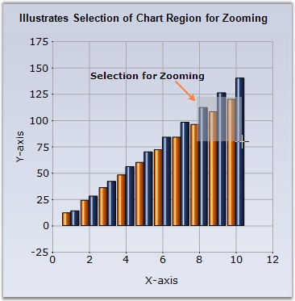
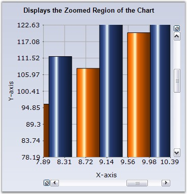
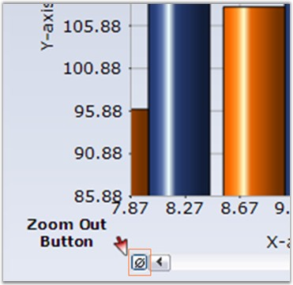

Interactive Zooming
Zooming via Mouse
Essential Chart supports interactive zooming features along the x and y axis. During runtime, the user can simply select the range he wants to zoom with the mouse and the chart will accordingly zoom-in. Scrollbars will be activated to browse the areas that become hidden on zooming in.
Enable Zooming via the EnableXZooming and EnableYZooming properties.

Figure 290: Select a region in the chart to Zoom-In

Figure 291: Resultant Zoomed-In Chart
The scrollbar will shift by the amount specified in the ScrollPrecision property which is set to 20 by default.
User can zoom out by clicking the "Zoom Out" button in the scrollbar.

Figure 292: Zoom Out button beside the Scrollbar
ZoomOutIncrement property specifies the increment by which to zoom out. The default value is 0.2.
Programmatic Zooming
Programmatically the chart can be zoomed using ZoomFactorX and ZoomFactorY properties. The Zoom factor is usually between 0 and 1. When set to 1, the chart isn't zoomed. When set to 0.5, the chart is double its usual size. Scrollbars will automatically appear to allow any section of the hidden range to be viewed. The default value is 1.
You can also programmatically specify the scrollbar position of the zoomed in axes using the ZoomPositionX and ZoomPositionY properties.
To restrict the zoom-in factor to a certain level on the x and y axis use the MinZoomFactorX and MinZoomFactorY properties. The value can be in between 0 and 1. 1 means not zoomed.
Zooming via Keyboard
Essential Chart also enables users to use keyboard shortcuts to enable zooming. Enable this feature through the KeyZoom property.
Using the following properties the zooming action can be mapped to specific keys.
|
Chart control Property |
Description |
|
ZoomCancel |
Specifies the keyboard shortcut to control Zoom cancel. The default value is ESCAPE. |
|
ZoomDown |
Specifies the keyboard shortcut to control Zoom Down. The default value is DOWN arrow. |
|
ZoomIn |
Specifies the keyboard shortcut to control Zoom In. The default value is ADD key. |
|
ZoomLeft |
Specifies the keyboard shortcut to control Zoom Left. The default value is LEFT arrow. |
|
ZoomOut |
Specifies the keyboard shortcut to control Zoom Out. The default value is SUBTRACT. |
|
ZoomRight |
Specifies the keyboard shortcut to control Zoom Right. The default value is RIGHT arrow. |
|
ZoomUp |
Specifies the keyboard short cut to control Zoom Up. The default value is UP arrow. |
Panning Support for Zoomed Chart
Now, you will be able to pan a chart when it is zoomed. Set the ChartControl.MouseAction to 'Panning' to enable this feature. Set the MouseAction to 'None' to disable this feature. The panning action can be controlled using the ZoomActions property that is available for individual axis.
|
Chart Axes Property |
Description |
|
ZoomActions |
Specifies the zoom action on the corresponding axis. The options are, Panning - Enables panning in the zoomed chart. None - Disables panning in the zoomed chart. |
|
[C#]
this.chartControl1.MouseAction = ChartMouseAction.Panning; this.chartControl1.PrimaryXAxis.ZoomActions = ChartZoomingAction.Panning; this.chartControl1.PrimaryYAxis.ZoomActions = ChartZoomingAction.Panning; |
|
[VB.NET]
Me.chartControl1.MouseAction = ChartMouseAction.Panning Me.chartControl1.PrimaryXAxis.ZoomActions = ChartZoomingAction.Panning Me.chartControl1.PrimaryYAxis.ZoomActions = ChartZoomingAction.Panning |
 Note: Remember to enable zooming on both the axis
using EnableXZooming and EnableYZooming properties, before trying out the above
panning feature. You cannot pan a chart without zooming it.
Note: Remember to enable zooming on both the axis
using EnableXZooming and EnableYZooming properties, before trying out the above
panning feature. You cannot pan a chart without zooming it.
Formatted Axes Lables
It is possible to show formatted axes labels for a zoomed chart. Essential Chart's SmartDateZoom property when set to true enables this feature. You can set any one of the following custom label formats to the chart axis.
· SmartDateZoomDayLevelLabelFormat
· SmartDateZoomYearLevelLabelFormat
· SmartDateZoomWeekLevelLabelFormat
· SmartDateZoomSecondLevelLabelFormat
· SmartDateZoomMonthLevelLabelFormat
· SmartDateZoomHourLevelLabelFormat
· SmartDateZoomMinuteLevelLabelFormat
|
[C#]
this.chartControl1.PrimaryXAxis.SmartDateZoom = true; this.chartControl1.PrimaryXAxis.SmartDateZoomDayLevelLabelFormat = "dd MM/yy HH.00"; |
|
[VB.NET]
Me.chartControl1.PrimaryXAxis.SmartDateZoom = True Me.chartControl1.PrimaryXAxis.SmartDateZoomDayLevelLabelFormat = "dd MM/yy HH.00" |
Figure 293: SmartDateZoomDayLevelLabelFormat = "dd MM/yy HH.00"
Note: The value type of the axis should be
"DateTime" for setting the above formatted labels.
A sample which demonstrates the zooming and scrolling features is available in the following sample installation location.
<Install Location>\Syncfusion\EssentialStudio\<Install version>\Web\chart.web\Samples\3.5\UserInteraction\ZoomingAndScrolling
See Also
How to hide the Chart ZoomButton